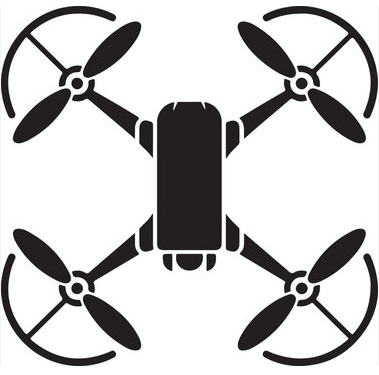

January 2026 - December 2026

OSCAR (Open Source Copter for Academic Research) is a fully open-source quadcopter
platform designed to support university-level research in embedded systems, controls,
and autonomous flight. The system integrates custom hardware, real-time firmware,
and closed-loop control algorithms to create a flexible, research-ready flight platform.
Project Website:
sddec26-05.sd.ece.iastate.edu
I served on the firmware team with a focus on flight control algorithms and acted as the primary liaison between the hardware and firmware teams. My responsibilities included:
OSCAR provides a customizable, research-focused quadcopter platform that enables experimentation with new control strategies, embedded architectures, and autonomous systems research. By contributing to both firmware development and system integration, I helped bridge the gap between hardware design and control implementation to ensure reliable flight performance.